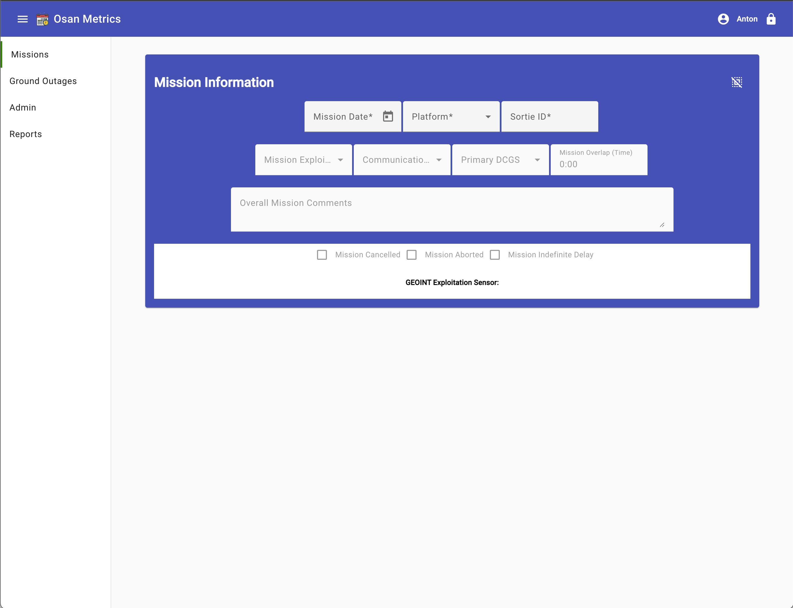
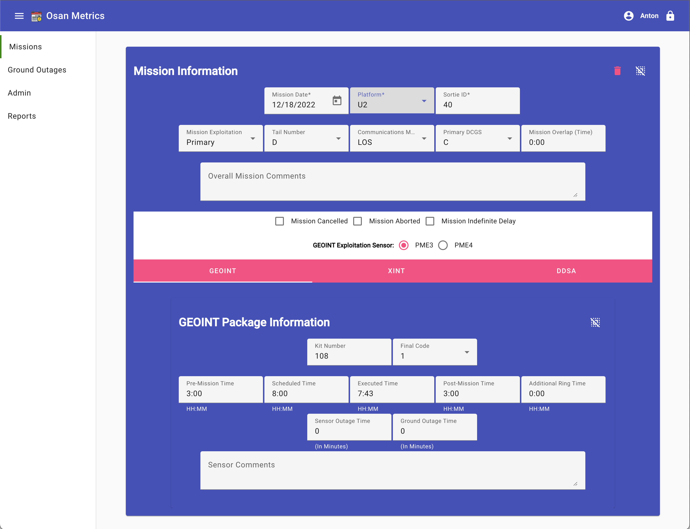
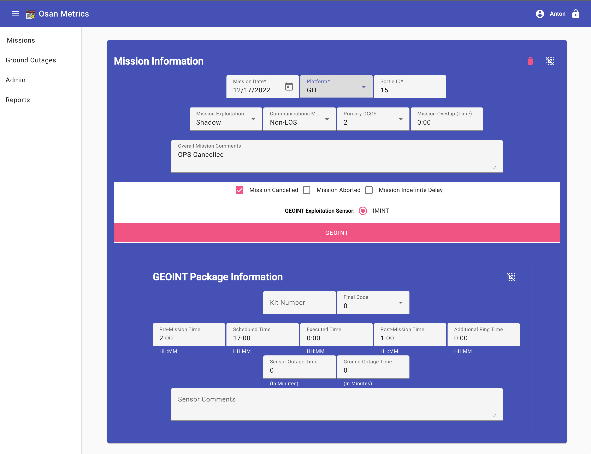
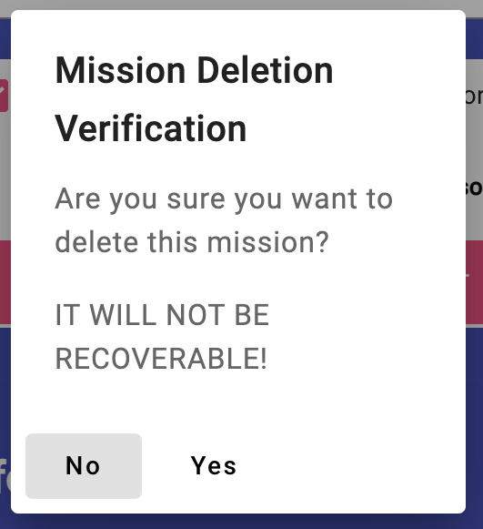

Editing the Basic Mission Information

You'll notice in the empty mission display, the top three input fields are
Mission Date, Mission Platform and Sortie ID. These three data elements
are how the missions are separated and based on the platform, changes are
made.
NOTE: Most fields on the display cause
changes to be recorded. There is NO Save
button and all modifications are saved as you left the edit box or field.
Create or Edit a mission:
- Click on the calendar icon in the Mission Date editor. This will bring
up a calendar for you to pick the date for the mission.
- Click in the Platform Editor and a list of available platforms or
aircraft types will display. Select the correct platform for this
mission. If the mission is already entered for the date and platform,
a sortie identifier will display.
- If necessary, type in the sortie for this mission in the space provided. If the
mission is already in database, this will fill in the rest of the form
with the available data.


Your display will be similar to those shown above, the data and edit field
will be different. The sensor edit tabs may be like the U2 mission display,
where you have multiple selections or only one for the mission, even none
at all. These are determined by your workcenter/permission combination.
Now lets go through each field:
- Mission Exploitation: (Select One) This is the value for our site's involvement
in exploiting the imagery or other information. Possible values include:
Primary - done on site, Shadow - receive only for monitoring, Federated -
controlled by another site, but helping with the interpretation.
-
Tail Number - (U2 Missions only) This is holds the letter designator for
the mission aircraft's tail number.
-
Communications - (Select One) This is the way we, or the other site, are
reveiving the information from the the mission sensors. LOS - Line-of-Sight,
Ext-LOS - Line-of-Sight, but sent to other, Non-LOS - any other method.
-
Primary DCGS - (Select One) This is the site who has control of the
mission. There is a choice for all available sites.
-
Mission Overlap: (Optional) This value in hours:minutes is the amount
of time this mission overlaps another or in the area at the same time.
4:30 is stating that this mission overlaps another mission for 4 hours and
30 minutes.
-
Overall Mission Comments: (Optional) This field is used to record any
comments that affect the mission as a whole. There are separate comment
fields for each sensor.
-
Lastly there are three checkboxes for mission cancellation (before takeoff),
abort (after takeoff, but before on-station), and indefinte delay. Check
these boxes if needed.
Clear a Mission: If you need to clear
the displayed mission, just click on the Clear Icon
() in the upper-right
portion of the mission view. This will not delete a mission already created
just empty the input fields.
Delete a Mission: If you need to delete
the current displayed mission from the database, click on the Delete Icon
() in the upper-right portion of the
mission view. You will be asked to verify the deletion, realizing that all
of the mission's data will be removed from the database and unrecoverable.
See below for an image of the verification dialog.

Empty Mission
Edit Sensor